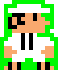

Yucaterc@ / Main
Es el personaje principal, ama la cochinita y detesta a los foráneos.


Es el personaje principal, ama la cochinita y detesta a los foráneos.
Es amable y quiere ayudar, pero siempre termina perjudicando. Los enemigos no le afectan.
Se mudó con su inmensa familia a Yucatán, siempre tiene un machete cerca, por si se arma.
Huyó de la capital para vivir en Mérida. Nada hace tanto daño como su ataque de bolillo.
Alimento sagrado del yucateco, es su alimento sagrado y su motor de vida, si el campechano lo come, los puntos son negativos.
Cualquier yucateco lo puede asegurar: La cochinita no sabe igual, sin su coquita, , si el campechano la toma, los puntos son negativos.
Engendro infernal, plagio del alimento sagrado. Yucaterco que se respete la odia con locura. El campechano puede comerla y ayuda
Nada como una "bomba" en medio de la vaquería para darle más vida a la fiesta. El campechano también puede activarla.